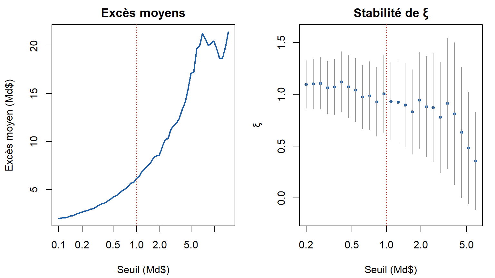
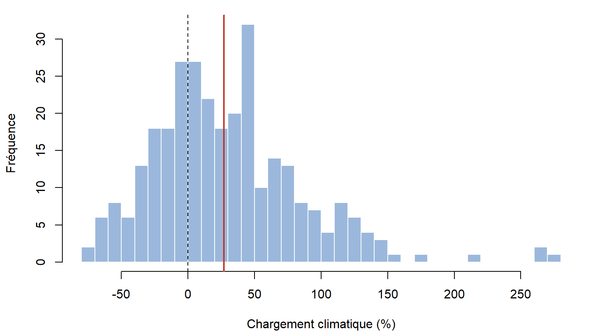

Le climat rend-il la réassurance catastrophe plus chère ?
Note actuarielle : théorie des valeurs extrêmes non stationnaire appliquée aux sinistres catastrophe américains, 1996-2024
NoteEn une phrase
Sur 1996-2024, la prime pure de la tranche 5 Md$ au-delà de 10 Md$ passerait de 2 176 M$ à 2 762 M$ sous un réchauffement prolongé jusqu’en 2035 (+27 %), mais l’intervalle bootstrap de ce chargement va de −59 % à +142 %. Les données ne justifient pas de chargement climatique démontrable, et le modèle stationnaire passe le backtest 2013-2024.
1 Question
Les modèles de tarification de la réassurance catastrophe supposent que le passé ressemble à l’avenir. Cette note teste cette hypothèse : la loi des sinistres extrêmes américains a-t-elle changé avec le temps et avec la température globale, et si oui, de combien faut-il corriger la prime d’une tranche en excédent de sinistre ?
2 Données
| Source | Usage |
|---|---|
| NOAA Storm Events (fichiers details, 1990-2024) | dommages matériels par événement |
FRED : CPI (CPIAUCSL) et PIB nominal (GDPA) |
normalisation |
| NOAA Climate at a Glance | anomalie de température globale |
| NOAA PSL : indice ONI | ENSO (moyenne juin-novembre) |
| Sinistres incendie danois (McNeil, 1997) | validation du code |
Rupture de 1996. Avant 1996, la base NOAA ne contient que les tornades, le vent et la grêle : aucun ouragan n’y figure, pas même Andrew (1992). L’étude porte donc sur 29 années, 1996-2024.
Du rapport au sinistre. La NOAA découpe une tempête en épisodes, par bureau météo et par État. Les épisodes sont regroupés par une clause des 72 heures, comme dans un traité catastrophe : Katrina passe de six épisodes à un sinistre unique de 164 Md$.
Normalisation. Un ouragan de 1996 coûterait davantage aujourd’hui, parce qu’il y a plus de biens, et de plus grande valeur. Les montants sont ramenés en dollars 2024 par le rapport des PIB nominaux, qui corrige à la fois de l’inflation et de la croissance de la richesse exposée (dans l’esprit de Pielke et al., 2008).
3 Méthode
3.1 Validation sur les données danoises
Le code reproduit McNeil (1997) : au seuil de 10 M DKK, ξ = 0,497 et β = 6,97, et le quantile à 99,9 % vaut 94 contre 95 publié. Ces valeurs sont vérifiées par les tests du package, ainsi que la concordance avec evd et fExtremes.
3.2 Modèle stationnaire
Au seuil de 1 Md$ (116 sinistres, environ 4 par an), la GPD donne ξ = 0,93 (0,18) et β = 1,53 Md$. La queue est extrêmement lourde : avec ξ proche de 1, l’espérance d’un sinistre est à peine finie. Une tranche, bornée, garde toutefois une prime finie.
| Période (ans) | Niveau | IC 95 % |
|---|---|---|
| 10 | 50 | [26 ; 144] |
| 50 | 229 | [75 ; 1 255] |
| 100 | 437 | [118 ; 3 197] |
| 200 | 834 | [183 ; 8 148] |
3.3 Modèle non stationnaire
L’échelle de la GPD dépend d’une covariable, log β = γ₀ + γ₁ z, à ξ constant. La fréquence suit un processus de Poisson dont le taux annuel est log-linéaire. Chaque modèle est comparé au modèle stationnaire par le rapport de vraisemblance et l’AIC.
| Effet | Statistique LR | p | ΔAIC |
|---|---|---|---|
| Gravité ~ année (par décennie) | 2,95 | 0,086 | -1,0 |
| Gravité ~ température | 1,93 | 0,165 | 0,1 |
| Gravité ~ ENSO | 0,01 | 0,914 | 2,0 |
| Fréquence ~ année (par décennie) | 3,65 | 0,056 | -1,7 |
| Fréquence ~ température | 1,53 | 0,217 | 0,5 |
Aucun effet n’est significatif à 5 %. Les estimations ponctuelles vont en sens opposé : des sinistres un peu plus graves, mais un peu moins fréquents. L’année et la température sont corrélées à 0,91 : ces données ne peuvent pas distinguer un effet climatique d’une tendance temporelle quelconque.
4 Résultats : tarification
Le scénario 2035 prolonge la tendance de température 1996-2024 (anomalie de 1,32 °C). Les tranches portent sur la perte de marché américaine, sans limite annuelle ni reconstitution.

- Prime pure stationnaire de la tranche 5 Md$ xs 10 Md$ : 2 176 M$, IC bootstrap [1 186 ; 3 272] M$.
- Scénario 2035 : 2 762 M$, soit +27 %, IC [−59 % ; +142 %].
- Sur une tranche basse (0,5 Md$ xs 1 Md$, touchée presque chaque année), le chargement est négatif, car la fréquence baisse : le signe du chargement dépend de la tranche.
5 Validation : backtest
Les modèles ajustés sur 1996-2012 ont été confrontés aux sinistres 2013-2024. Le modèle stationnaire prévoyait 13,2 sinistres au-delà de 5 Md$ (12 observés) et 3,1 au-delà de 20 Md$ (3 observés). Le modèle climatique surestimait ces extrêmes (19,9 et 6,1). Le détail est dans analyse/s5b.R.
6 Limites
- Dommages estimés, non assurés. La NOAA rapporte des estimations de dommages économiques, parfois arrondies et parfois manquantes. La méthode d’estimation a varié au fil du temps : le nombre de gros sinistres baisse après 2013, probablement pour cette raison.
- Normalisation nationale. Le PIB national ne voit pas que les côtes exposées se sont enrichies plus vite que le reste du pays : la gravité récente pourrait être légèrement surestimée.
- 29 ans, c’est court pour des événements centennaux : les intervalles de confiance des niveaux de retour vont de 1 à 10.
- Une covariable globale. L’anomalie de température mondiale ne représente pas directement la température de surface de l’Atlantique, qui gouverne l’activité cyclonique.
7 Conclusion
Sur 1996-2024, la théorie des valeurs extrêmes non stationnaire ne met en évidence aucun changement significatif de la loi des sinistres catastrophe américains normalisés. Le chargement climatique estimé pour 2035 (+27 % sur la tranche 5 Md$ xs 10 Md$) est noyé dans l’incertitude d’estimation, et le modèle stationnaire passe le backtest. Ce résultat ne dit pas que le climat n’a pas d’effet. Il dit que cet effet n’est pas mesurable avec ces données. Un tarificateur qui appliquerait un chargement devrait le justifier par d’autres sources (modèles physiques, données de température de surface de la mer), pas par l’historique des sinistres.
8 Références
- McNeil, A. J. (1997). Estimating the tails of loss severity distributions using extreme value theory. ASTIN Bulletin, 27(1), 117-137.
- Pielke, R. A. Jr. et al. (2008). Normalized hurricane damage in the United States: 1900-2005. Natural Hazards Review, 9(1), 29-42.
- Coles, S. (2001). An Introduction to Statistical Modeling of Extreme Values. Springer.